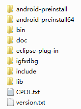
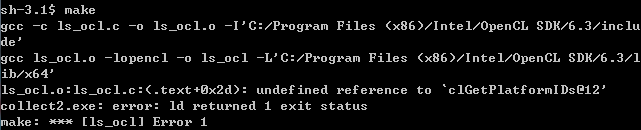
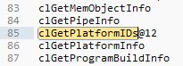
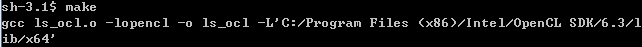
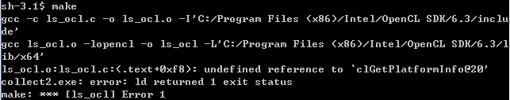
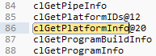
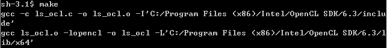
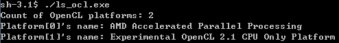

公司电脑不得不用Win10，可是VC++没有C99和C++11的支持，用着太难受了。而且微软的编译器的命令行太诡异了，用着不舒服，我还是喜欢GCC。不得已，只能使用MinGW。不过自从被迫用了MinGW之后，我发现MinGW真的是救世主啊，创造了一个GNU环境~然鹅，MinGW创造的终究是一个象牙塔，我不可能永远只用MinGW提供的各种库。这不，我最近用到了OpenCL。OpenCL SDK肯定是与操作系统相关的，Windows上安装的是Windows版本的OpenCL SDK。
这是我安装了Intel OpenCL之后的目录：

在C:\Program Files (x86)\Intel\OpenCL SDK\6.3\lib\x64目录下，可以看到只有OpenCL.lib这么一个静态库。
但是呢，GCC在链接的时候，使用-lopencl这样的参数时，需要链接libopencl.a这么一个静态库。我试过，如果直接把OpenCL.lib重命名成libopencl.a是行不通的，因为VC++所用的静态库(*.lib)的格式和GCC所用的静态库(*.a)的格式是不一样的。 那么如何使用MinGW GCC来链接那些专门给VC++准备的静态链接库(*.lib)呢？就在我到处问津而不得时，万能的Stack Overflow给出了一个绝佳的答案！看《Compile OpenCL on Mingw Nvidia SDK》！
现在让我们写一个最最简单的程序试试看吧~下面这个程序就是输出当前的OpenCL平台的个数：
ls_ocl.c
#include <stdio.h>
#include <assert.h>
#include <CL/cl.h>
int main()
{
cl_uint platform_cnt;
assert(clGetPlatformIDs(0,0,&platform_cnt)==CL_SUCCESS);
printf("Count of OpenCL platforms: %u\n",platform_cnt);
return 0;
}
对应的Makefile:
OpenCL_Root=C:/Program Files (x86)/Intel/OpenCL SDK/6.3
ls_ocl: ls_ocl.o
gcc ls_ocl.o -lopencl -o ls_ocl -L'${OpenCL_Root}/lib/x64'
ls_ocl.o: ls_ocl.c
gcc -c ls_ocl.c -o ls_ocl.o -I'${OpenCL_Root}/include'

可以看到compile的时候是正确的，但是在link的时候，报错说找不到"clGetPlatformIDs@12"。咦，我明明使用的是clGetPlatformIDs，为何链接时变成了clGetPlatformIDs@12？这个12是GCC给CL/cl.h中声明的函数标的一个序号，具体我也不懂（汗）。那么我们就用《Compile OpenCL on Mingw Nvidia SDK》中提到的办法，用reimp和dlltool把OpenCL.lib转成libopencl.a吧~
cd '/c/Program Files (x86)/Intel/OpenCL SDK/6.3/lib/x64' reimp OpenCL.lib
这时会发现C:\Program Files (x86)\Intel\OpenCL SDK\6.3\lib\x64下面多了libopencl.a和OpenCL.def两个文件。不过此时的libopencl.a还不能使用，因为它里面定义的函数完全是从OpenCL.lib中原封不动地导出的，包括那个clGetPlatformIDs，声明的名称还是clGetPlatformIDs，而不是clGetPlatformIDs@12。
用文本编辑器打开OpenCL.def，找到clGetPlatformIDs，把它改为clGetPlatformIDs@12：

然后：
dlltool -l libopencl.a -d OpenCL.def -A -k
此时就会生成新的libopencl.a，覆盖掉之前的libopencl.a（通过时间戳就可以看出来）。
然后再对本来的代码进行make：

成功产生ls_ocl.exe，然后执行之：

好，那么再把程序弄得稍微复杂一些，比如我想把所有OpenCL平台的名称打印出来：
ls_ocl.c
#include <stdio.h>
#include <stdlib.h>
#include <assert.h>
#include <CL/cl.h>
int main()
{
cl_uint platform_cnt;
assert(clGetPlatformIDs(0,0,&platform_cnt)==CL_SUCCESS);
printf("Count of OpenCL platforms: %u\n",platform_cnt);
cl_platform_id* platform_ids=(cl_platform_id*)malloc(sizeof(cl_platform_id)*platform_cnt);
assert(clGetPlatformIDs(platform_cnt,platform_ids,0)==CL_SUCCESS);
for(int i=0;i<platform_cnt;i++)
{
char platform_name[1024];
assert(clGetPlatformInfo(platform_ids[i],CL_PLATFORM_NAME,sizeof(platform_name),platform_name,0)==CL_SUCCESS);
printf("Platform[%u]'s name: %s\n",i,platform_name);
}
return 0;
}

发现找不到clGetPlatformInfo@20这个函数。故技重施，把OpenCL.def中clGetPlatformInfo改为clGetPlatformInfo@20：

然后
dlltool -l libopencl.a -d OpenCL.def -A -k

成功生成，然后运行：

正如《Compile OpenCL on Mingw Nvidia SDK》中说的，遇到函数xxx@xxx找不到了，就改一下OpenCL.def，然后重新使用dlltool产生libopencl.a就可以了。这个方法同样可以推广到其他的*.lib到*.a的转换。